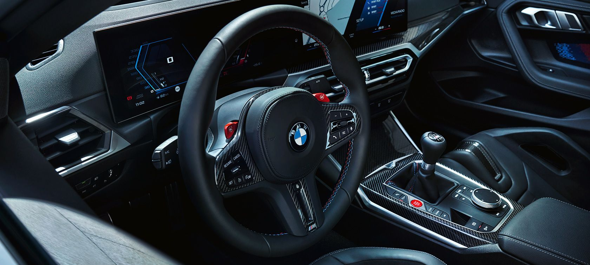
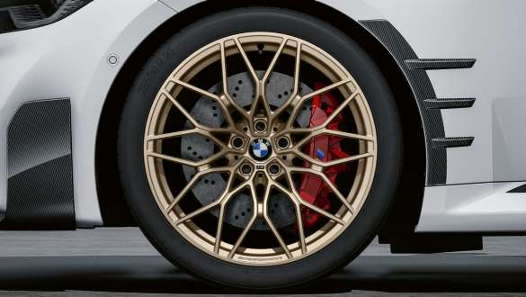
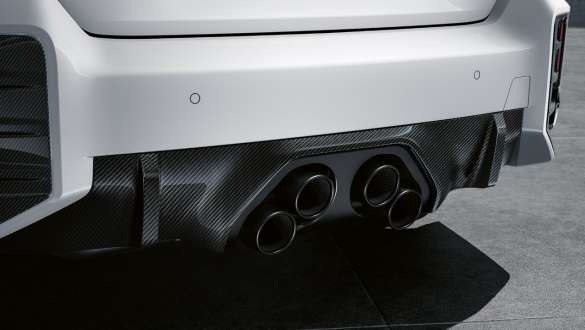
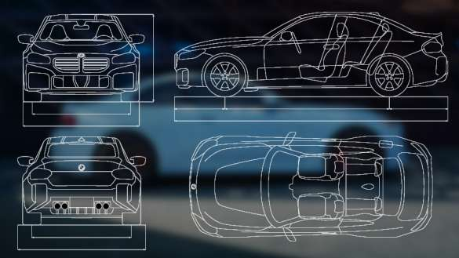

BMW M2 Competition
BMW M2 on BMW 2. seeria auto versioon, mille on välja töötanud BMW motospordiosakond BMW M GmbH. Kuna 2. seeria asendas 1. seeria kupee- ja kabriolettmudelid, turustati esimese põlvkonna M2-d, kui sarja kõige elementaarsemat M-mudelit. Esimese põlvkonna M2 kasutas mudelite M3/M4 F8x šassii koodnimega F87 ja BMW N55 seeria mootorit, samas kui selle järglastel M2 Competition ja M2 CS oli BMW M GmbH välja töötatud kahe turboülelaaduriga mootor (S55 mootor).
Uue BMW M2 Coupé, BMW M240i Coupé ja BMW M240i xDrive Coupé kasutuskontseptsioon, digitaalsed teenused ja juhiabisüsteemid.
ORIGINAALTARVIKUD |
LISAVARUSTUS |
M-MUDELITE TEHNILISED ANDMED |
|---|---|---|
| 21-tollised M Performance'i sepisveljed Cross-spoke style | Titaanist M Performance'i summutitorumoodul | BMW M2 mootori v]imsus 338 kw |